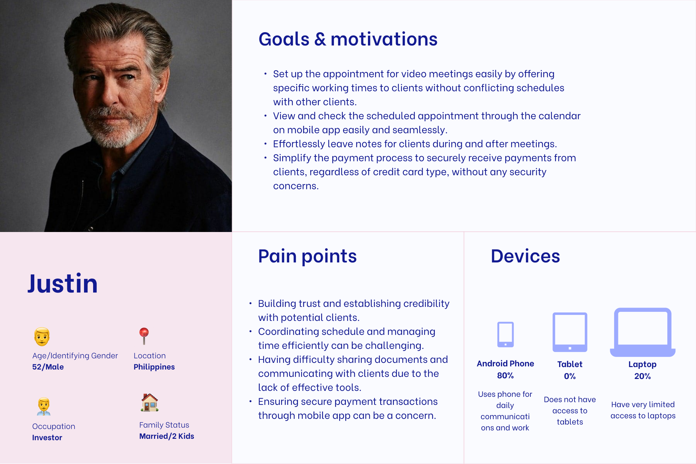
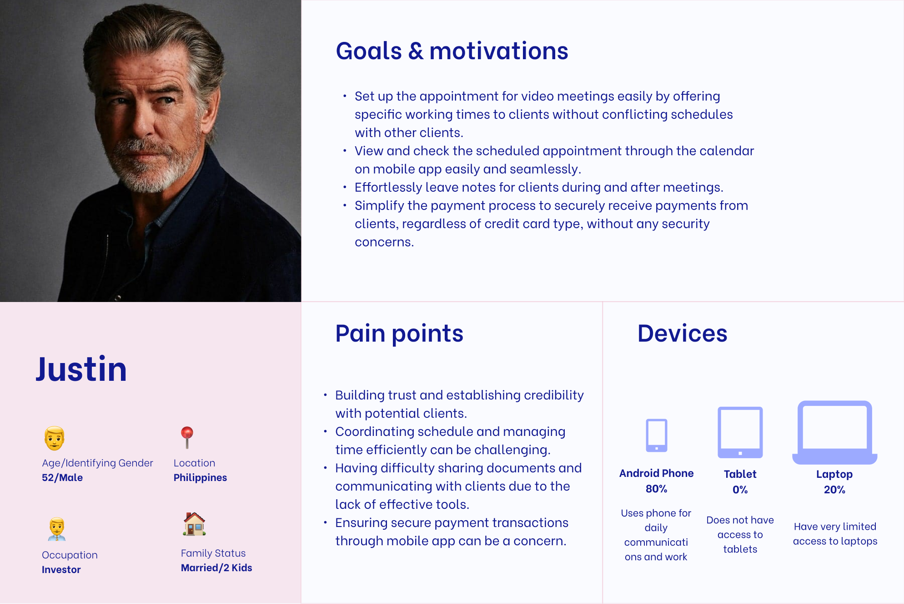

What is Social Economy Action Research Foundation?
Social Economy Action Research Foundation (SEAR) believes in action research that seeks to empower and mobilize grassroots communities, social enterprises, and inclusive businesses as active players in the larger social economy.
Project Objective
Based on the National Social Enterprise Roadmap and research about underprivileged social entrepreneurs, 9 out of 10 social enterprises fail to thrive, grow, and succeed in their mission. We aimed to design a mobile app to be used by aspiring social entrepreneurs for consultancy from successful entrepreneurs in order to improve their likelihood of success.
Result
Given the time constraints of our project, having had to shift our project objective at Week 10, we were not able to fully circulate our design to potential users. However, we will stay in touch with the client Paul Medina as he shares the design with aspiring entrepreneurs for feedback.
Project Overview
Role: Product Designer
Tools: Figma, Figjam, Mural, Canva, and Notion
Duration: 16 weeks (May - Aug 2023)
Team: 8 Designers, 1 Design Manager, 1 Product Manager, and 1 Product Lead
PERSONAS
Understanding the target audience
To better understand our users, their goals, and their pain points, we created personas for the two main types of the users of the mobile app—aspiring entrepreneurs and social enterprise consultant.
 

COMPETITIVE ANALYSIS
Analyzing key features
For competitive analysis, our team focused on researching on meeting scheduling (Calendly, ADP List, etc.), video conferencing (Zoom, Google Meet, Microsoft Teams, etc.), and payment (Venmo, PayPal, GCash, Maya, etc.) platforms as these are the main features that the mobile app contains. For each platform, we analyzed their pros and cons as well as how we can apply their certain features to our designs.
I was assigned with the payment competitors and found some typical design patterns.
ADD COMPETITIVE ANALYSIS PICTURE!!!
NOT DONE!!!
This project has not been fully updated yet. Please feel free to reach out to me for more information. :)
Thank you for reading! There are other projects that you might want to explore and read, and you can access one of them below. :)